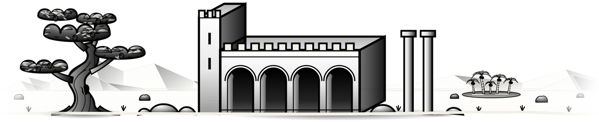
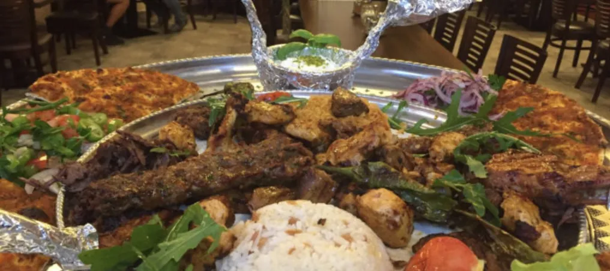
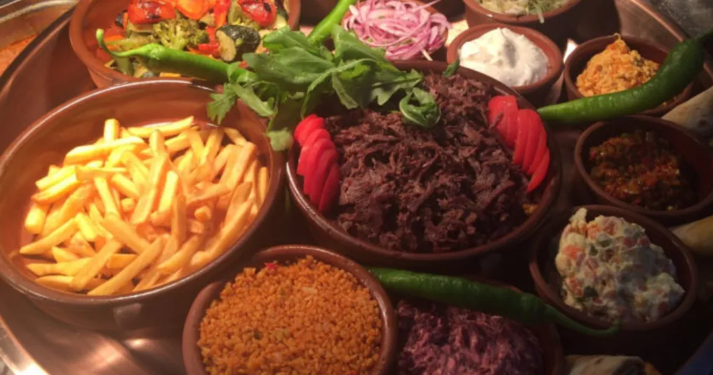
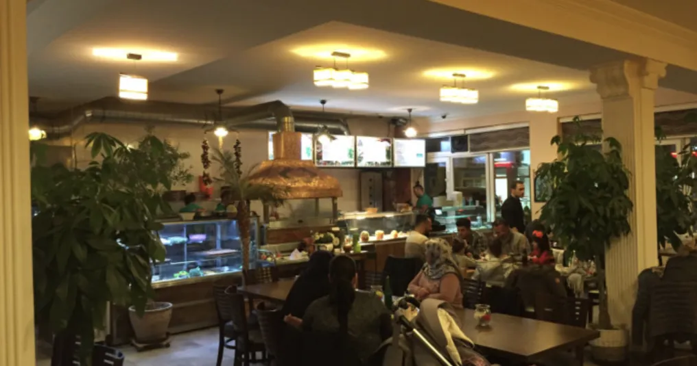
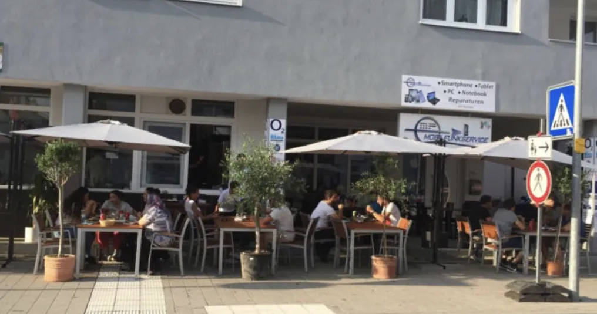

Täglich 10:00 – 23:00 Uhr

URFA SOFRASI Türkisch-anatolische Küche in Eislingen/Fils
Grillspezialitäten, Döner, Pide und Lahmacun sowie wechselnde Tagesgerichte – im Restaurant, auf der Terrasse oder zum Mitnehmen.


Hoş geldiniz · Willkommen
Zwischen Europa und Asien gelegen, hat die türkische Küche über Jahrhunderte vieles aufgenommen: Einflüsse aus der Mittelmeerküche ebenso wie aus der indischen, armenischen und arabischen Küche. Diese Vielfalt möchten wir Ihnen in unserem Restaurant näherbringen.
Genießen Sie unser großes, preiswertes Angebot und entdecken Sie mitten in Eislingen die Esskultur Anatoliens. Wir freuen uns auf Ihren Besuch!
Aus unserer Speisekarte
Beliebte Gerichte
Alle Grillgerichte servieren wir mit Reis, Salat, Brot und Soße.
- Urfa Sofrasıab 50,00 € Gemischte Grillplatte für 2, 3 oder 4 Personen
- Karışık Izgara25,00 € Gemischte Grillplatte
- Adana & Urfa Kebapje 17,00 € Hackfleischspieß – Adana scharf, Urfa mild gewürzt
- Dönerab 8,00 € Im Fladenbrot, im Yufka, als Box oder als Teller
- İskender19,00 € Der Klassiker unter den Dönergerichten
- Pide & Lahmacunab 8,00 € Aus dem Ofen – mit Hackfleisch, Käse, Spinat, Sucuk oder Döner
- Künefeab 7,50 € Engelshaar-Teig mit Käsefüllung – auch mit Eis


Zu Gast bei uns
Unser Restaurant
Unser gemütlich eingerichtetes Restaurant bietet Platz für bis zu 70 Gäste. In den warmen Monaten finden auf unserer Terrasse weitere 40 Gäste einen Platz.
- Gäste im Restaurant
- 70
- Plätze auf der Terrasse
- 40
Kommen Sie vorbei und überzeugen Sie sich selbst – bis bald im URFA SOFRASI!
Rund um Ihren Besuch
Gut zu wissen
-
11:00 – 18:00 Uhr
Tagesgerichte
Regelmäßig wechselnde Tagesgerichte gibt es zwischen 11:00 und 18:00 Uhr zu günstigen Preisen. Fragen Sie einfach nach, was es gerade gibt.
-
Alle Gerichte
Zum Mitnehmen
Alle Gerichte bekommen Sie auch zum Mitnehmen. Rufen Sie gern vorher an: 07161 651 75 65.
-
Hochzeit · Geburtstag · Firmenfeier
Feiern bei uns
Ob Hochzeit, Geburtstag oder Firmenfeier: Unser Restaurant steht Ihnen auch für Veranstaltungen zur Verfügung. Das Menü stellen wir gern individuell mit Ihnen zusammen.
Einblicke
Frisch vom Grill
Aus der Vitrine, vom Grill und von unserer Terrasse.


Kontakt & Anfahrt
Wir freuen uns auf Ihren Besuch
Telefon
07161 651 75 65Öffnungszeiten
| Montag – Sonntag | 10:00 – 23:00 Uhr |
|---|---|
| Tagesgerichte | 11:00 – 18:00 Uhr |
Für Feiern und größere Gruppen sprechen Sie uns gern direkt an.